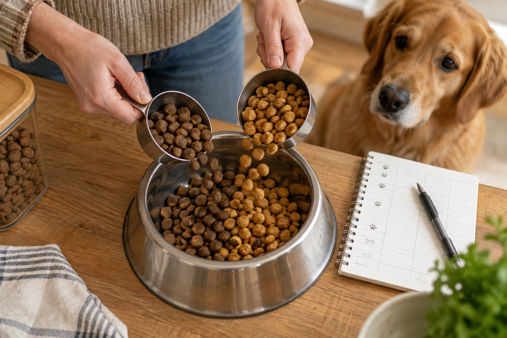

For a healthy dog, introduce a new food over about a week or longer by increasing the new portion gradually while keeping the total daily amount appropriate. Follow your veterinarian’s plan for medical diets or illness.
A sudden bowl swap makes it harder to tell whether a new food suits your dog and can upset digestion. A gradual switch is a simple experiment with one clear variable: the proportion of old and new food. The exact pace depends on the dog, so treat a seven-day outline as a starting plan rather than a deadline.
Decide why you are changing food
Before opening a new bag, name the reason for the change. A life-stage transition, supply problem, preference, or veterinary recommendation may each call for a different plan. If your dog has vomiting, diarrhea, weight loss, or a medical diagnosis, ask a veterinarian before experimenting with diets. Changing food repeatedly can hide the original problem and make an assessment harder. A prescribed diet should be transitioned according to the clinic’s instructions, which may differ from a general outline.
Check that the new food is complete and balanced for your dog’s life stage if it will be the main diet. Read the feeding guide and calorie information. The old and new foods may have different calorie density; replacing one cup with one cup can change total intake. Measure both amounts separately and ask your veterinary team for a daily target if your dog is gaining or losing weight. Keep treats and table scraps stable during the switch so you can interpret any change.
Look at the ingredient and recipe information for genuine changes that matter to your dog, but avoid assuming that a longer ingredient list is inherently harmful. If your veterinarian is investigating a suspected food allergy, casual switching can interfere with a controlled diet trial. Follow the prescribed food and treat rules closely. If the new product has a different texture, discuss how to introduce it without forcing your dog to go hungry.
Set aside enough of the old food to finish the transition. Running out halfway through can force a sudden switch. Label two measuring cups or containers so the proportions remain clear to everyone in the household. A simple note on the kitchen cabinet can prevent one person from serving the old mix while another serves only the new food.
Use a gradual schedule as a flexible guide
A common starting pattern for a healthy dog is mostly old food with a small amount of new food for the first couple of days, then roughly half of each, then mostly new food, before serving the new diet alone. AAHA’s public guidance describes a gradual transition over about a week or more. The pattern is a guide, not a race. If your dog is sensitive or your veterinarian advises a slower change, extend each stage. Follow a different prescribed schedule when a medical reason requires it.
Calculate portions from calories where possible, particularly if the foods differ markedly. For a simple home example, if your veterinarian has recommended the same daily calorie total during the transition, the old and new portions should together meet that target, rather than each being served at its full label amount. Measure what actually goes into each bowl. Do not let the percentage chart accidentally double dinner.
Keep meal times and the number of meals consistent while the food changes. A stable routine helps you see whether stool or appetite changed because of the recipe rather than a new feeding schedule. Offer fresh water as usual. Avoid adding rich toppers to persuade a hesitant dog unless your veterinarian recommends them; several new ingredients at once make it difficult to identify a problem.
If your dog leaves the new portion, remove the bowl according to your normal feeding plan and review the next step. Do not repeatedly replace meals with treats. A dog who refuses all food or seems unwell needs veterinary advice. For a picky but otherwise well dog, ask whether a slower introduction or a different suitable diet makes sense. Let the dog’s comfort and clinical context set the pace.

Watch stool, appetite, and comfort
Keep a short daily record: proportions offered, how much was eaten, stool consistency, vomiting, energy, and any unusual signs. A single softer stool may have several explanations, but a repeated pattern matters. If mild digestive change appears, do not automatically press ahead to the next stage. Contact your veterinarian for guidance, especially if your dog is young, old, small, medically fragile, or on medication. Persistent diarrhea or vomiting is not a normal price of switching food.
Watch for symptoms beyond digestion. Itching, ear problems, appetite changes, and weight trends may be relevant, but they cannot be assigned to the new food from timing alone. A veterinarian can help evaluate the whole picture. Keep the food package and lot number in case product details are needed. Do not begin over-the-counter remedies or leftover prescriptions to make the transition continue.
Consider a dog who handles the first small addition but develops loose stool as the new portion reaches half the bowl. Write down that stage and any treats eaten that day. Contact your veterinarian before increasing again. The answer may be to pause, step back, use a slower transition, or investigate another cause. The record is useful because it shows exactly when the change occurred; it does not prove the new food is the sole cause.
Seek urgent care if your dog appears weak, collapses, has repeated vomiting, shows signs of dehydration, has severe pain, or cannot keep water down. A dog with blood in stool or a rapidly worsening condition needs prompt professional guidance. Do not rely on a generic transition chart when serious signs appear. The purpose of changing gradually is to reduce avoidable upset and observe the response, not to delay care.
A flexible transition outline
| Stage | Typical bowl mix |
|---|---|
| Start | Mostly old food, a small new portion. |
| Middle | Roughly equal parts if stools and appetite stay normal. |
| Later | Mostly new food before moving to the full new diet. |
Make the kitchen routine consistent
Write the current proportions where every feeder can see them. Use the same scoop or scale and identify which container holds each food. If someone else feeds lunch or dinner, tell them the exact mix for that day. Avoid leaving an unlabelled bowl for a family member to guess. In multi-dog homes, feed separately when necessary so each dog actually eats its planned amount and you can see who has a problem.
Store both foods according to their labels. Keep dry food in its original bag when possible, inside a clean container with the lot and date still available. Refrigerate opened wet food as directed. Wash bowls and measuring tools. If a new bag smells unusual, has damaged packaging, or looks wrong, do not use it simply because the transition schedule says today is the day to increase it. Contact the seller or manufacturer and ask your veterinarian if your dog seems unwell.
Track the change for a little while after the new food reaches the full portion. Some weight or stool patterns become clearer only after the first week. Note when the old food ended and whether appetite remained normal. If the new food is working well, keep the routine stable rather than changing again for variety without a reason. A consistent diet can make future health changes easier to notice.
If travel or a schedule disruption is coming, consider whether this is a good week to start. An owner who cannot observe every meal or stool may miss useful signals. When possible, begin during an ordinary week with enough old food, predictable meals, and time to call a veterinarian if questions arise. For an urgent medical diet change, follow the clinic’s instructions instead of delaying for convenience.
Know when the plan needs veterinary input
Call before switching if your dog has a chronic illness, a prescribed diet, a history of severe digestive reactions, or a suspected food allergy. Ask what food to choose, the target portion, the transition pace, and which symptoms should trigger a call. Put that individual plan ahead of a general online schedule. Some medical circumstances require a different approach, and a veterinarian can weigh the risks of delay against digestive comfort.
Call during the transition when your dog refuses meals, vomits, has persistent diarrhea, becomes lethargic, or develops another concerning sign. Tell the clinic the exact old and new products, proportions, date of the last change, and any treats or medications. A photo of the package and your feeding log can help. Do not discard the labels until the dog has settled on the new diet and you are sure no product question remains.
Once the switch is complete, review body condition and weight rather than assuming that a comfortable stomach means the portion is right. A food with different calories may change weight gradually. Ask your veterinarian when to recheck and how to adjust if needed. Avoid sudden large cuts or additions based on one scale reading. Feeding is a long-term plan, not only a seven-day changeover.
The most useful transition is boring: one new food, measured amounts, normal meal times, a short log, and room to slow down. If that straightforward plan stops being straightforward because your dog feels unwell, seek professional advice. A clear record will make that conversation faster and safer than guessing which day or ingredient caused the problem.
A printed transition chart can help, but write the actual amounts beside each stage. For example, if the daily ration is divided into two meals, each feeder should know whether the mix applies per meal or per day. Split both the old and new portions across meals in the same way. If your dog takes medication with food, ask the veterinary team whether the new diet or altered meal size changes how it should be given. Do not change medication timing yourself.
If you use wet and dry foods together, compare calorie contribution rather than equal-looking spoonfuls. Moisture makes volumes misleading. The goal is not a mathematically perfect percentage to the gram; it is a consistent, sensible change with an appropriate total amount. Record the package’s calorie information and the amount served. If the new food is much richer, your veterinarian may advise a different portion even when the dog appears hungry for the old volume.
When a dog develops symptoms during a transition, preserve the timeline. Was the first loose stool before the new food started? Did a visitor offer a rich chew? Was a medication added the same day? These questions do not excuse symptoms, but they help a clinician avoid blaming the diet without evidence. Report worsening signs promptly and follow professional advice on whether to pause, return to the previous stage, or seek an examination.
After the transition, do not throw away all information about the old food immediately. Keep a label photo and a brief note on why you changed. If the new diet later seems unsuitable, that record helps your veterinarian compare options. Never restart a food that previously caused a serious reaction without discussing it with a professional.
If a new bag has a different batch number but the same recipe, it usually does not require the same transition as an entirely new diet. Still inspect the food and observe your dog. If the manufacturer announces a formula change, ask what changed and consider whether a gradual transition is useful. Keep a photo of both labels. This prevents a quiet recipe change from being mistaken for a new medical problem or for a reaction to an unrelated treat.
Continue exploring
For a broader routine, read Can Dogs Eat Bananas? What Pet Owners Should Know, Can Cats Eat Cooked Chicken?, and How to Read a Pet Food Label Without the Hype.
Frequently Asked Questions
How long should a dog-food transition take?
For many healthy dogs, about a week or longer is a reasonable guide. Some need more time, and medical diets may require a veterinarian’s specific schedule.
Should I mix old and new food in the same bowl?
You can if your dog accepts it and you measure the total correctly. Keep daily calories and portions appropriate, and avoid adding several other new foods at the same time.
What if my dog has diarrhea during the switch?
Pause the next increase and call your veterinarian for advice, especially if signs continue or your dog is unwell. Repeated diarrhea, vomiting, weakness, or inability to keep water down needs prompt care.
Editorial references
These resources informed the general guidance in this article. They do not replace advice tailored to your pet.
This guide offers general information. Your pet’s age, health, and history may call for a different plan. For medical concerns, ask your veterinarian.